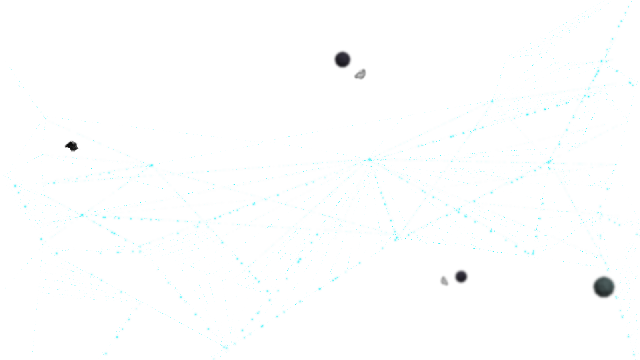
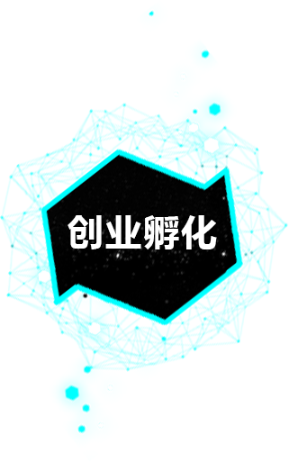

解决方案
培训
外包服务
IT咨询
产品研发
产学研创高效教育模式


博看文思的客户遍布全球，研发项目涉及电子商务、IT服务、P2P、SNS、大数据、智能硬件、可穿戴设备、云计算等各行各业，博看文思自主研发的APP产品被多次评为“精品应用”。博看文思的项目成果不仅极大地满足了客户的需求，并且强有力地推动了移动互联网行业的发展。

博看文思的客户遍布全球，研发项目涉及电子商务、IT服务、P2P、SNS、大数据、智能硬件、可穿戴设备、云计算等各行各业，博看文思自主研发的APP产品被多次评为“精品应用”。博看文思的项目成果不仅极大地满足了客户的需求，并且强有力地推动了移动互联网行业的发展。

博看文思的客户遍布全球，研发项目涉及电子商务、IT服务、P2P、SNS、大数据、智能硬件、可穿戴设备、云计算等各行各业，博看文思自主研发的APP产品被多次评为“精品应用”。博看文思的项目成果不仅极大地满足了客户的需求，并且强有力地推动了移动互联网行业的发展。

博看文思的客户遍布全球，研发项目涉及电子商务、IT服务、P2P、SNS、大数据、智能硬件、可穿戴设备、云计算等各行各业，博看文思自主研发的APP产品被多次评为“精品应用”。博看文思的项目成果不仅极大地满足了客户的需求，并且强有力地推动了移动互联网行业的发展。


合作企业
战略联盟与合作伙伴关系是博看文思业务持续发展的重要保证，博看文思已经与行业领导者建立了战略合作伙伴关系，紧密的合作伙伴关系，确保博看文思能够满足客户的各种需求，并为客户提供最优秀的解决方案。


电话：4006-333-186
地址：北京石景山区总工会二层